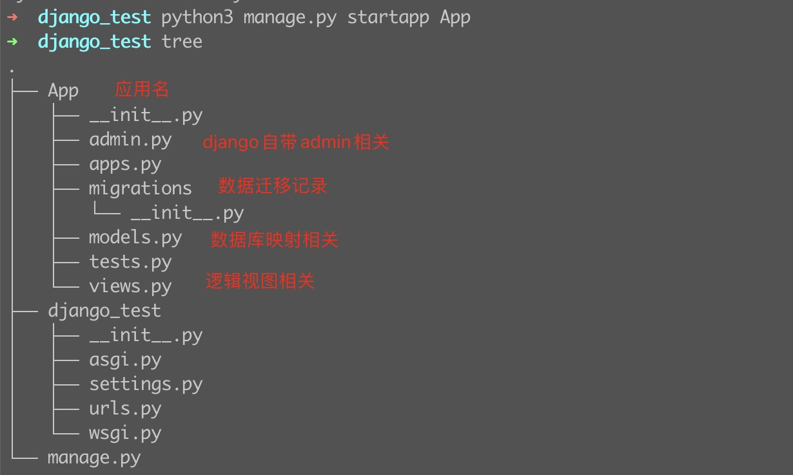
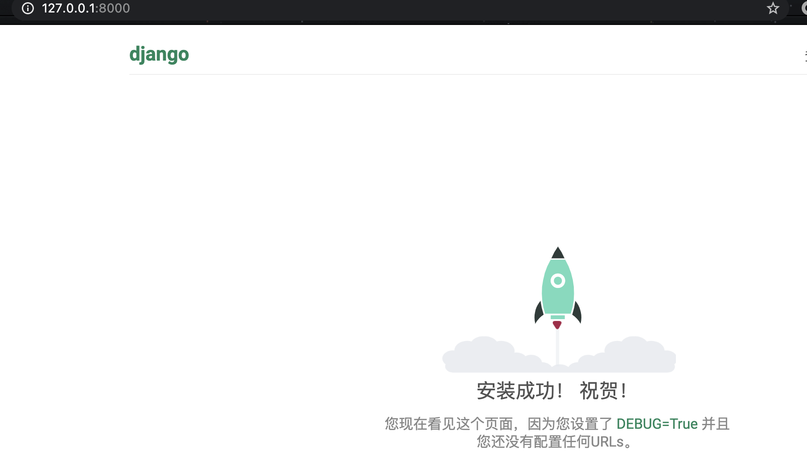
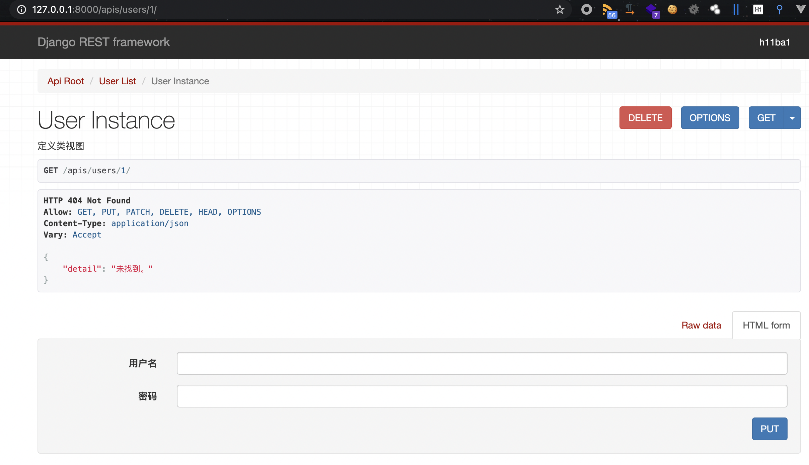

django学习记录
最近做毕设用到了django，这里简单记录一下开发过程。项目使用前后端分离，使用django的restframework框架写接口非常的便捷。这里简单记录一下学习过程。
0x01 django基本操作
安装django：
1 | pip3 install django==3.1.7-i https://pypi.tuna.tsinghua.edu.cn/simple |
创建一个项目：
1 | django-admin startproject 项目名称 |

创建一个应用：
1 | python3 manage.py startapp App |
项目配置文件注册应用：
1 | django_test/django_test/settings.py |

汉化及时区配置
1 | LANGUAGE_CODE = 'zh-hans' |
django启动
1 | python manage.py runserver 默认启动只允许本地访问 |

0x02 django 模型字段
官方文档：https://docs.djangoproject.com/zh-hans/3.1/ref/models/fields/#django.db.models.Field
https://www.liujiangblog.com/course/django/95
| 类型 | 说明 |
|---|---|
| AutoField | 一个自动增加的整数类型字段。通常你不需要自己编写它，Django会自动帮你添加字段：id = models.AutoField(primary_key=True)，这是一个自增字段，从1开始计数。如果你非要自己设置主键，那么请务必将字段设置为primary_key=True。Django在一个模型中只允许有一个自增字段，并且该字段必须为主键！ |
| BigAutoField | 64位整数类型自增字段，数字范围更大，从1到9223372036854775807 |
| BigIntegerField | 64位整数字段（看清楚，非自增），类似IntegerField ，-9223372036854775808 到9223372036854775807。在Django的模板表单里体现为一个NumberInput标签。 |
| BinaryField | 二进制数据类型。较少使用。 |
| BooleanField | 布尔值类型。默认值是None。在HTML表单中体现为CheckboxInput标签。如果设置了参数null=True，则表现为NullBooleanSelect选择框。可以提供default参数值，设置默认值。 |
| CharField | 最常用的类型，字符串类型。必须接收一个max_length参数，表示字符串长度不能超过该值。默认的表单标签是text input。 |
| DateField | class DateField(auto_now=False, auto_now_add=False, **options) , 日期类型。一个Python中的datetime.date的实例。在HTML中表现为DateInput标签。在admin后台中，Django会帮你自动添加一个JS日历表和一个“Today”快捷方式，以及附加的日期合法性验证。两个重要参数：（参数互斥，不能共存） auto_now:每当对象被保存时将字段设为当前日期，常用于保存最后修改时间。auto_now_add：每当对象被创建时，设为当前日期，常用于保存创建日期(注意，它是不可修改的)。设置上面两个参数就相当于给field添加了editable=False和blank=True属性。如果想具有修改属性，请用default参数。例子：pub_time = models.DateField(auto_now_add=True)，自动添加发布时间。 |
| DateTimeField | 日期时间类型。Python的datetime.datetime的实例。与DateField相比就是多了小时、分和秒的显示，其它功能、参数、用法、默认值等等都一样。 |
| DecimalField | 固定精度的十进制小数。相当于Python的Decimal实例，必须提供两个指定的参数！参数max_digits：最大的位数，必须大于或等于小数点位数 。decimal_places：小数点位数，精度。 当localize=False时，它在HTML表现为NumberInput标签，否则是textInput类型。例子：储存最大不超过999，带有2位小数位精度的数，定义如下：models.DecimalField(..., max_digits=5, decimal_places=2)。 |
| DurationField | 持续时间类型。存储一定期间的时间长度。类似Python中的timedelta。在不同的数据库实现中有不同的表示方法。常用于进行时间之间的加减运算。但是小心了，这里有坑，PostgreSQL等数据库之间有兼容性问题！ |
| EmailField | 邮箱类型，默认max_length最大长度254位。使用这个字段的好处是，可以使用Django内置的EmailValidator进行邮箱格式合法性验证。 |
| FileField | class FileField(upload_to=None, max_length=100, **options)上传文件类型，后面单独介绍。 |
| FilePathField | 文件路径类型，后面单独介绍 |
| FloatField | 浮点数类型，对应Python的float。参考整数类型字段。 |
| ImageField | 图像类型，后面单独介绍。 |
| IntegerField | 整数类型，最常用的字段之一。取值范围-2147483648到2147483647。在HTML中表现为NumberInput或者TextInput标签。 |
| GenericIPAddressField | class GenericIPAddressField(protocol='both', unpack_ipv4=False, **options),IPV4或者IPV6地址，字符串形式，例如192.0.2.30或者2a02:42fe::4。在HTML中表现为TextInput标签。参数protocol默认值为‘both’，可选‘IPv4’或者‘IPv6’，表示你的IP地址类型。 |
| JSONField | JSON类型字段。Django3.1新增。签名为class JSONField(encoder=None,decoder=None,**options)。其中的encoder和decoder为可选的编码器和解码器，用于自定义编码和解码方式。如果为该字段提供default值，请务必保证该值是个不可变的对象，比如字符串对象。 |
| PositiveBigIntegerField | 正的大整数，0到9223372036854775807 |
| PositiveIntegerField | 正整数，从0到2147483647 |
| PositiveSmallIntegerField | 较小的正整数，从0到32767 |
| SlugField | slug是一个新闻行业的术语。一个slug就是一个某种东西的简短标签，包含字母、数字、下划线或者连接线，通常用于URLs中。可以设置max_length参数，默认为50。 |
| SmallAutoField | Django3.0新增。类似AutoField，但是只允许1到32767。 |
| SmallIntegerField | 小整数，包含-32768到32767。 |
| TextField | 用于储存大量的文本内容，在HTML中表现为Textarea标签，最常用的字段类型之一！如果你为它设置一个max_length参数，那么在前端页面中会受到输入字符数量限制，然而在模型和数据库层面却不受影响。只有CharField才能同时作用于两者。 |
| TimeField | 时间字段，Python中datetime.time的实例。接收同DateField一样的参数，只作用于小时、分和秒。 |
| URLField | 一个用于保存URL地址的字符串类型，默认最大长度200。 |
| UUIDField | 用于保存通用唯一识别码（Universally Unique Identifier）的字段。使用Python的UUID类。在PostgreSQL数据库中保存为uuid类型，其它数据库中为char(32)。这个字段是自增主键的最佳替代品，后面有例子展示。 |
0x03 django QuerySetAPI
官方文档：https://docs.djangoproject.com/zh-hans/3.1/ref/models/querysets/#field-lookups
QuerySetAPI 函数：https://www.liujiangblog.com/course/django/130
| 方法名 | 解释 |
|---|---|
| filter() | 过滤查询对象。 |
| exclude() | 排除满足条件的对象 |
| annotate() | 为查询集添加注解或者聚合内容 |
| order_by() | 对查询集进行排序 |
| reverse() | 反向排序 |
| distinct() | 对查询集去重 |
| values() | 返回包含对象具体值的字典的QuerySet |
| values_list() | 与values()类似，只是返回的是元组而不是字典。 |
| dates() | 根据日期获取查询集 |
| datetimes() | 根据时间获取查询集 |
| none() | 创建空的查询集 |
| all() | 获取所有的对象 |
| union() | 并集 |
| intersection() | 交集 |
| difference() | 差集 |
| select_related() | 附带查询关联对象，利用缓存提高效率 |
prefetch_related() |
预先查询，提高效率 |
| extra() | 将被废弃的方法 |
| defer() | 不加载指定字段，也就是排除一些列的数据 |
| only() | 只加载指定的字段，仅选择需要的字段 |
| using() | 选择数据库 |
select_for_update() |
锁住选择的对象，直到事务结束。 |
| raw() | 接收一个原始的SQL查询 |
0x04 django rest framework
drf提供了强大的封装，可以快速编写符合restful风格api。
restful api：
一篇不错的解释文章：https://juejin.cn/post/6844904071640383502
在接口的定义中引入了请求方法，使api接口跟简洁。例如：
同样的接口通过请求方式的不同，具有不同的操作效果。
django restframework安装：
1 | pip install djangorestframework |
注册到配置文件：
1 | INSTALLED_APPS = [ |
编写实例：
注册模型：
User/models.py
1 | from django.db import models |
迁移申请：
1 | python manage.py makemigrations |
创建表结构：
1 | python manage.py migrate |
注册序列化器：
User/serializers.py
1 | from rest_framework import serializers |
注册视图：
User/views.py
1 | from .models import User |
注册路由：
User/urls.py
1 | from . import views |
查看视图接口：

0x05 生成接口文档
使用drf接口编写非常快速。为了更加详细的查看和测试接口可以引入swagger接口文档。
安装drf_yasg2：
1 | pip install drf_yasg2 |
注册应用：
1 | INSTALLED_APPS = [ |
注册路由：
项目/Urls.py
1 | urlpatterns = [ |

0x06 参考：
https://www.liujiangblog.com/course/django/130
https://www.runoob.com/django/django-tutorial.html
本博客所有文章除特别声明外，均采用 CC BY-NC-SA 4.0 许可协议。转载请注明来自 h11ba1's blog！
 alipay
alipay
评论